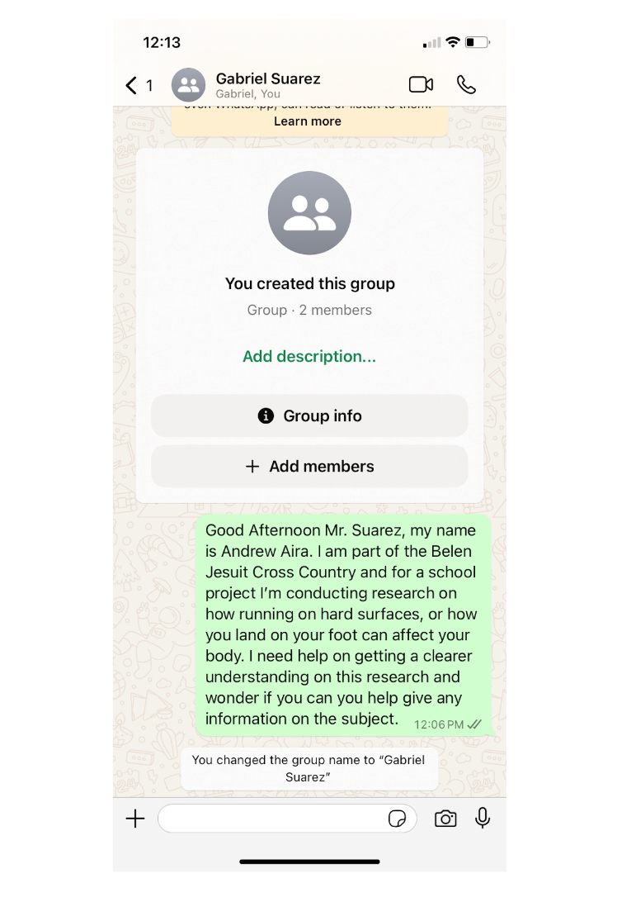
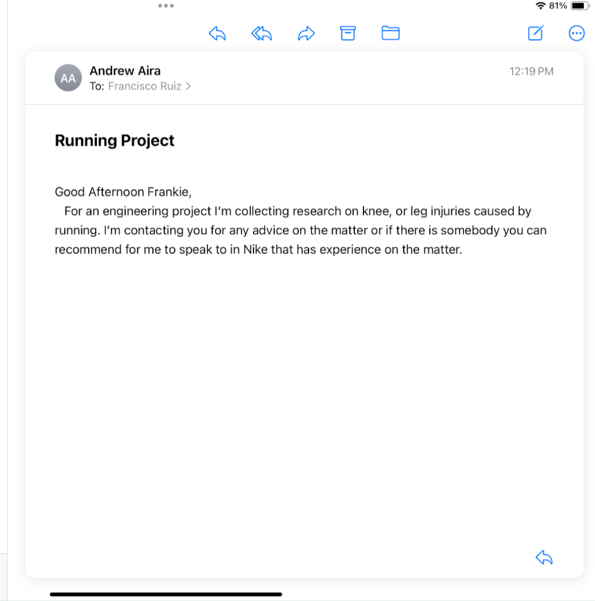

The Cross Country team has been experiencing injuries over the past four years including shin splints, knee pain, and Achilles pain. Multiple studies have attributed these injuries to constant running on hard surfaces. In addition, knee and heel pain has also been attributed to bad foot placement. A solution should be created to help reduce or mitigate the amount of injuries.

Contact professionals include Covalent Health's Dr. Gabriel Suarez and Frankie Ruiz, a nike running coach.
 Sources
Source 1: Trailrun Magazine
In the magazine, the question of whether running shoes cause injury is put up to research and the answer is no.There hasn’t been a correlative link between injuries and running shoes. In experiments, multiple foot types were given different shoes and no correlation was found. Running shoe company innovation has rather been based on hype and marketing. Even though running shoes have consistently gotten better, the percent of injury has remained stable. Instead the cause on injury coming from Dr. Reed Ferber is from doing too much,and too fast. Minimalist shoes aren’t to blame as people without comprehensive training would use the shoe and get injured. The best option is ample amount of cushioning, ample amount of protection, and good running form.In addition, strength work helps a general boost. This article helps focus my project now more less on the actual shoe strength and more on form. Foot placement, foot stretch, and other factors are a big reason for the injuries helping narrow down the variables to help control injury. There are still questions on pressure on the foot takes and foot strength is another variable I hadn’t thought about. Though the article validates my project by showing simple shoe padding can’t just complexity prevent injury as a whole.
Metzler, B. (2021, June 4). What You Need To Know About Running Shoes And Injuries. Trail Runner Magazine; Trail Runner Magazine. https://www.trailrunnermag.com/gear/shoes/what-you-need-to-know-about-running-shoes-and-injuries/#
Source 2: Mayo Clinic
Achilles Tendinitis is the overuse injury of the Achilles tendon, a band that connects calf muscles at the lower back of the lower leg to your heel bone. Achilles tendinitis can lead to tears or ruptures requiring surgery. It most commonly occurs due to sudden increased intensity or duration of runs. It is most common in runners and middle aged people who play sports. Symptoms include mild ache in the back of the leg and more severe pain after prolonged running. Causes are repetitive strain or intense strain on the tendon which is used to walk and run. Factors that can cause are older age, flat foot arch, obesity, worn out shoes, colder weather, and running on hilly terrain. Prevention includes avoiding activities with excessive stress including running, stretching, strengthening calf-muscles, gradual increase, and crowd training including swimming. The page shows validity by showing achilles tendinitis as an issue for runners. There is once again a correlation with running impact on the ground and the tear. It is also unique by bringing up a possible factor in multiple injuries, the shoe. The shoe's padding chin wears down overtime eventually not helping the pressure absorbed by the foot. A question. Though the question on terrain still hasn’t been answered and mileage too.
Mayo Foundation for Medical Education and Research. (n.d.). Achilles tendinitis. Mayo Clinic. https://www.mayoclinic.org/diseases-conditions/achilles-tendinitis/symptoms-causes/syc-20369020
Source 3: Temple Health
The temple health page focuses on runner's knee, Iliotibial band syndrome, and jumper’s knee. Runner’s knee is when the cartilage in the knee is irritated due to overuse. It affects over 30% of female runners and 25% of male runners. Now the biggest reasons are due to either running at an incline, increase in mileage of a runner, or increase of speed for a runner. Now why these cause the knee to irritate is the impact on the ground with a solution to stay active during injury being swimming. This also applies to the syndrome where the tendon between your hip and your knee causes irritation with the outer knee and also jumper’s knee where the tendon is overloaded. The page shows validity to the project and is unique by clearly showing knee pain as an issue, though raises more questions. Even though there is a clear correlation between impacting the ground and knee injury, how much pressure on the ground hurts the knee over time. How much average mileage or speed causes injury? Finally, there is a question of whether terrain has any impact.
Saxena, V. (n.d.). What are common knee injuries from running?. Temple Health. https://www.templehealth.org/about/blog/common-knee-injuries-running#:~:text=Runner’s%2520knee%2520%E2%80%93%2520also%2520known%2520as,in%2520your%2520kneecap%2520gets%2520irritated.
Patent 1:
CN211558968U - Insole for preventing running training injury - Google Patents. (2019, September 29). Google.com. https://patents.google.com/patent/CN211558968U/en
Shoe pad for preventing running training injuries. Contains multiple layers include anti-slip layer on top, rebound layer in the middle, and cork layer on the bottom. The cork is positioned at the heel and has an energy absorption layer. The cork has multiple layers with layer one being full palm as the other is half palm. The model looks to have the foot not bend and correct functions of the foot. The insole is more attached to the arch of the foot. It uses artificial cartilage bionic material that can absorb more than 90% of impact energy, convert impact energy into heat, and protect the body from injury. The heat energy is conducted to the cork layer. The patent is a new sole trying to prevent running injury. It does this by correcting foot position, absorbing energy impact, and even having a heating system. Though due to research, the insole might reduce not that much injury. There is still a large importance on foot strength, knee strength, and more. If your body isn’t fit to take the pressure, injury will occur regardless of shoe. Though it does bring up an idea of technology in the sole of shoe that can help with injury.
Patent 2:
US7726206B2 - Foot pressure alert and sensing system - Google Patents. (2007, November). Google.com. https://patents.google.com/patent/US7726206B2/en
Device that monitors pressure and force on the foot and visualizes it instantly. If detected pressure, a signal is sent to the micro computer processor in the shoe and then sends the stat wirelessly to an electronic device. The device then shows the data of the pressure. The sensors are in multiple points in the shoe, lining, and sock. There are primary sensors, or secondary sensors used in a low power mode. Both could even been activated at the same time,The battery would be a minimal size, and weight. It would be rechargeable, and removable battery. A medical node with help of a a microprocessor would process the data and then transmitted to a website. (Stations). The patent is a possible project that can show the pressure on the foot. This is perfect for a project such as mine that would like to detect and collect this data. With this patent first originating in 2007, through modern technology it can be made possible and more efficient. The wireless device connection is now easy with Bluetooth and more. Now the question is the material and resources necessary for the device.
Patent 3:
CN105455304B - Intelligent insole system - Google Patents. (2016c, January 4). Google.com. https://patents.google.com/patent/CN105455304B/en)
Invention that includes a control server, movement identification, control function, and equipment to more service. There is wireless communication between the insole and a control server. Wireless communication module uses Bluetooth mode, WiFi, and more. Can acquire information and send it out. Within the insole is an accelerometer, gyroscope, geomagnetic sensor, photosensitive sensor, pressure sensor, and gps module. The first three are for data for movement in three dimensions. It can detect velocity, movement, angular speed,. Photosensitive can possibly measure the degree of the foot, pressure can measure impact or weight. This patent is another insole patent with more than just pressure sensor, but also additional devices. This allows the device to not just be used for a multitude of purposes. This device would be perfect for a project like mine looking to see the forces impacting the foot and even see the outside facts that contribute to it, such as where on the foot lands.
Requirements
Measurable / Achievable / Relevant / Testable
(1): Device fits and remain only inside the show. Cannot be directly conncted to external device outside.
(2): The Device provides accurate and relevant data for the problem
(3): Ability to withstand and collect data from atleast a normal 5 mile run
(4): Have battery that lasts about 3 days, and rechargable
(5): Ability to open up, close, and fix the shoe device inside.
(6): Make the shoe device feel light and little increase on weight of show.
(7): Ability to replicate in shoes larger or smaller.
(8): Doesn't hinder runner's normal actions - Can normally walk or run.
(9): Allow for system inside to be easily opened or repaired.
(10): Data presneted in a clear format for presenation and analysis.